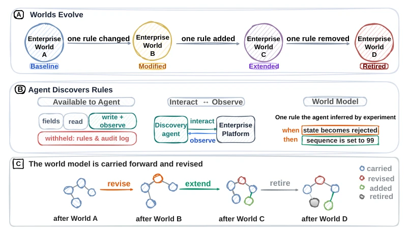
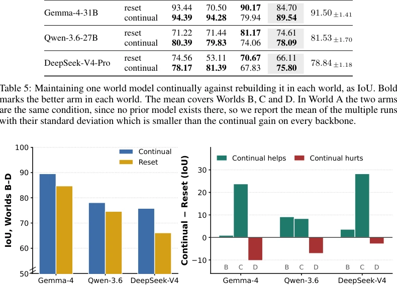

This paper presents a continual evolution version of "black box" rule learning for enterprise Agents, attempting to find a path through the complex rule maze of ServiceNow. CDA constructs an interpretable world model, which is more accurate than the DA that simply looks up tables; this point deserves praise, as "knowing what happens" is far more difficult than "knowing why it happens". But to be blunt, the model completely collapsed in the "delete rule" phase, having no defense against "disappearing evidence", indicating that the handling of "negative feedback" is still too naive; treating "no response" as "no rule" is simply a logical flaw. Although IoU improved by nearly 9 points, this explicit representation of writing rules as code likely incurs a non-trivial maintenance cost in complex enterprise scenarios, and might even be slower than direct table lookups. Overall, it is an interesting benchmark, but there is still a distance from truly robust continual learning, especially regarding how to handle rule conflicts and implicit dependencies; do not assume everything is fine just because IoU increased.
研究动机Motivation
企业软件中的业务规则由组织自行编写且随时间修订，Agent 若不知晓规则则无法预测行动后果。现有基准如 World of Workflows (Gupta et al., 2026) 评估静态规则下的预测，Discovery Agent (Sethumadhavan Nair et al., 2026) 虽能发现规则但每次重新查询，不保留模型。这导致无法测试 Agent 在规则变更时的持续适应能力。本文旨在解决 Continual Enterprise World Model Discovery 问题，即 Agent 从交互中推断规则并随规则变化更新模型。现有工作多关注任务完成而非模型正确性，且缺乏对规则修改、新增、移除等动态变化的控制测试，无法区分 Agent 是记住了规则还是仅仅记住了状态。
Business rules in enterprise software are written by organizations and revised over time; if an Agent does not know the rules, it cannot predict the consequences of actions. Existing benchmarks such as World of Workflows (Gupta et al., 2026) evaluate prediction under static rules, while Discovery Agent (Sethumadhavan Nair et al., 2026) can discover rules but re-queries each time without retaining the model. This leads to an inability to test the Agent's continual adaptability when rules change. This paper aims to solve the Continual Enterprise World Model Discovery problem, where the Agent infers rules from interactions and updates the model as rules change. Existing work mostly focuses on task completion rather than model correctness, and lacks controlled tests for dynamic changes such as rule modification, addition, and removal, failing to distinguish whether the Agent has memorized the rules or merely the states.
方法Method
CDA 采用两阶段流程：发现与应用。在发现阶段，Agent 通过编辑记录并观察变化来推断规则，将世界模型表示为显式的规则集合（触发条件 + 效果），而非神经网络权重。模型组件包括 (c, e) 对，支持跨表操作。在应用阶段，Agent 基于现有模型预测新动作的后果，无需查询系统。核心创新在于模型的持续维护：当环境从 World A 变到 World B 时，模型被携带并修订而非重建。Agent 通过实验循环（选择记录、修改字段、观察结果）来添加、细化或退役规则。与 DA 不同，CDA 在推理时不依赖实时查询，而是依赖内部模型。这要求模型具备可验证性，每个规则都能对应系统行为。尽管 LLM 本身不更新，但通过 Prompt 和外部规则库实现适应，解决了传统 World Model 难以解释和验证的问题。此外，模型支持规则的激活与停用，允许 Agent 在规则集变化时保持知识连贯性，而非每次重新学习。
CDA adopts a two-stage process: Discovery and Application. In the discovery phase, the Agent infers rules by editing records and observing changes, representing the world model as an explicit set of rules (trigger conditions + effects), rather than neural network weights. Model components include (c, e) pairs, supporting cross-table operations. In the application phase, the Agent predicts the consequences of new actions based on the existing model, without querying the system. The core innovation lies in the continual maintenance of the model: when the environment changes from World A to World B, the model is carried and revised rather than rebuilt. The Agent adds, refines, or retires rules through an experimental loop (selecting records, modifying fields, observing outcomes). Unlike DA, CDA does not rely on real-time queries during inference but relies on the internal model. This requires the model to be verifiable, where each rule corresponds to system behavior. Although the LLM itself does not update, adaptation is achieved through Prompts and an external rule library, solving the problem that traditional World Models are difficult to interpret and verify. Additionally, the model supports rule activation and deactivation, allowing the Agent to maintain knowledge coherence when the rule set changes, rather than relearning each time.

Figure 1: EnterpriseWorldShift and continual enterprise world model discovery. (a) Four versions of the same enterprise world, differing by one business rule each, modified in World B, added in World C, removed in World D. (b) The agent interacts with records and observes what follows, and from those observations assembles a world model whose components are the business rules it has inferred. (c) The model is carried forward rather than rebuilt.
The benchmark EnterpriseWorldShift is based on a real ServiceNow environment, containing 9 tables and 25 hidden rules, divided into four worlds (A initial, B modified, C added, D removed). Evaluation metrics are IoU, Precision, Recall. Baselines include DA and Simulator. Results show that CDA's IoU is superior to DA on all backbone models, with a maximum improvement of 8.98 points, with the main advantage being higher precision. Ablation studies show that continual adaptation yields the greatest benefit in World C (added rules), but performs worse than resetting the Agent in World D (removed rules), because CDA struggles to handle negative evidence of "effect disappearance". Additionally, Simulator performance is far lower than CDA, indicating that the rule application mechanism is more critical than rule discovery itself. Tests covered three different LLM backbones, verifying the generalization of the method.

Figure 2: Continual adaptation against rebuilding the model in each world. Left: mean IoU over Worlds B, C and D. Right: the per-world difference between the arms. The continual model gains most in World C and loses in World D.